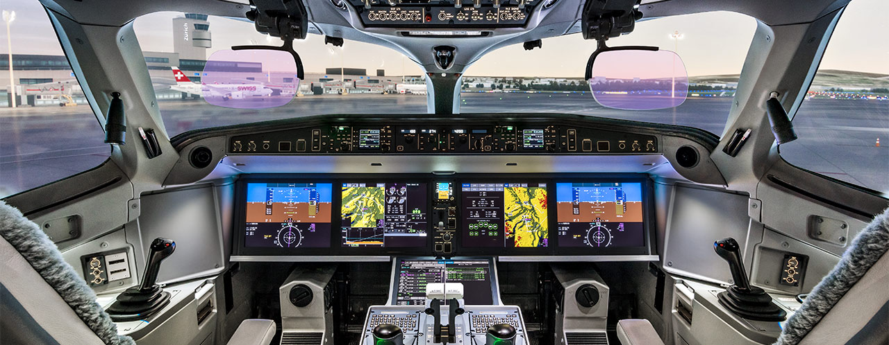

Airbus Business Jet Two-Twenty is a variant of the A220 commercial airliner. It started life as the Bombardier C-Series and was later incorportaed into the Airbus product line. The aircraft combines intercontinental range, unmatched personal space, and state of the art technology.

The clean sheet design uses advanced materials and fly-by-wire, offers outstanding connectivity, lower operating costs and unrivalled reliability.
And its techonology makes it a pleasure to fly Bringing together state-of-the-art aerodynamics, advanced materials and latest-generation technologies and engines, the A220 has a range of up to 3,450nm (6,390km), with an impressive environmental scorecard.
The twinjet features fly-by-wire flight controls, a carbon composite wing, an aluminium-lithium fuselage and optimised aerodynamics for better fuel efficiency.
Powering the A220-100 and the A220-300 are two Pratt & Whitney PurePower PW1500G geared turbofan engines specifically tailored for the A220.
With a bypass ratio of 12:1 – among the highest of any turbofan engine in the world – these powerplants contribute to the A220’s 25% lower fuel burn per seat when compared to previous-generation aircraft, as well as half the noise footprint and decreased emissions.
Together, the A220 Family represents the most efficient aircraft product line in its category, with environmental benefits, reduced fuel burn and low noise levels. This makes the A220 Family aircraft ideal for urban operations and noise-sensitive airports.

Delta Air Lines is the largest customer and operator, with 95 A220 ordered and respectively 51 airplanes in its fleet.
The ACJ Two-Twenty builds upon A220's spacious cabin, efficiency and advanced systems for a luxurious yet practical business jet.